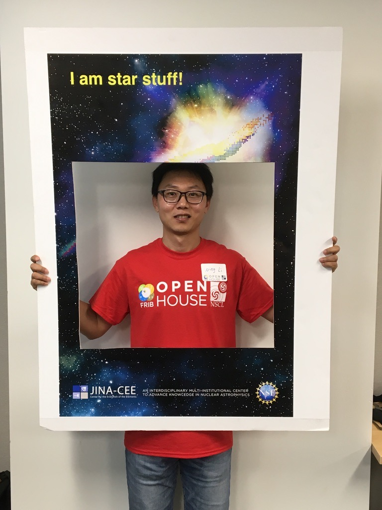

Faculty

Dr. Jiangming Yao
PhD, Peking UniversityProfessor,
School of Physics and Astronomy, Sun Yat-sen University, China
Research Interests: nuclear structure, nuclear weak decays, neutron stars, ab initio methods, density functional theory
Email: yao.jiangming_at_gmail.com
Personal page

Dr. Changfen Jiao
PhD, Peking UniversityAssociate professor,
School of Physics and Astronomy, Sun Yat-sen University, China
Research Interests: double beta decay, nuclear structure and decays, beyond standard model physics
Email: jiaochf_at_mail.sysu.edu.cn
Personal page

Dr. Ning Li
PhD, Peking UniversityAssociate professor,
School of Physics, Sun Yat-sen University, China
Research Interests: Nuclear Lattice EFT, nuclear structure, Hadronic physics, Monte Carlo simulations, Few- and Many-body Systems
Email: lining59@mail.sysu.edu.cn
Personal page